PUNTO ARCHIVES
Punto Archives is a vintage fashion brand focused on curated, high-quality pieces and timeless design. The project focused on strengthening the brand’s digital presence through a redesign of the website, visual identity and social media.
The process included research, UX/UI design, wireframing and prototyping, alongside content production, an original photoshoot and the development of a social media strategy. The result was a more cohesive and recognizable visual identity across the website and social platforms.
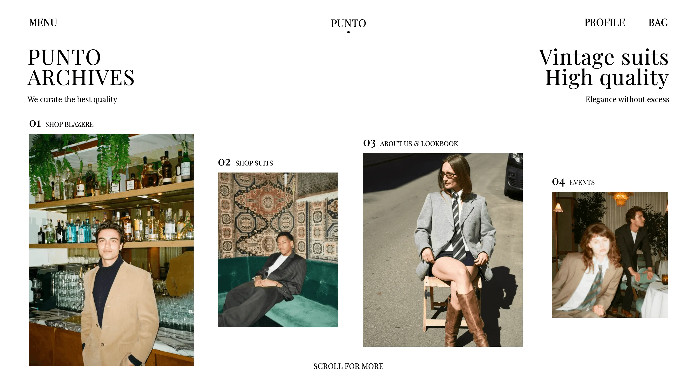
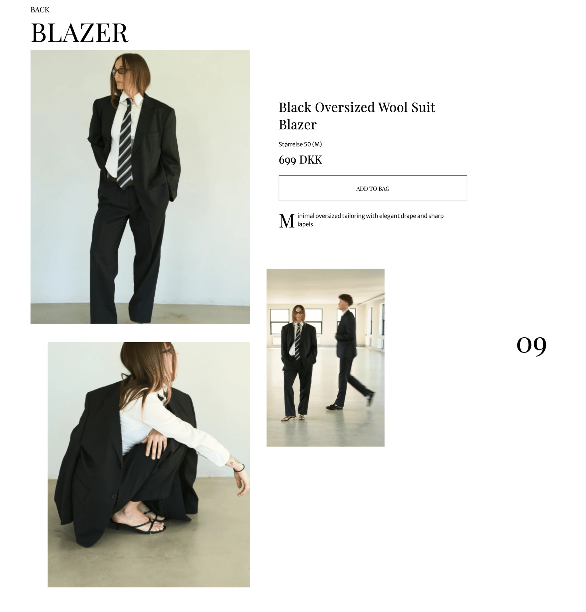
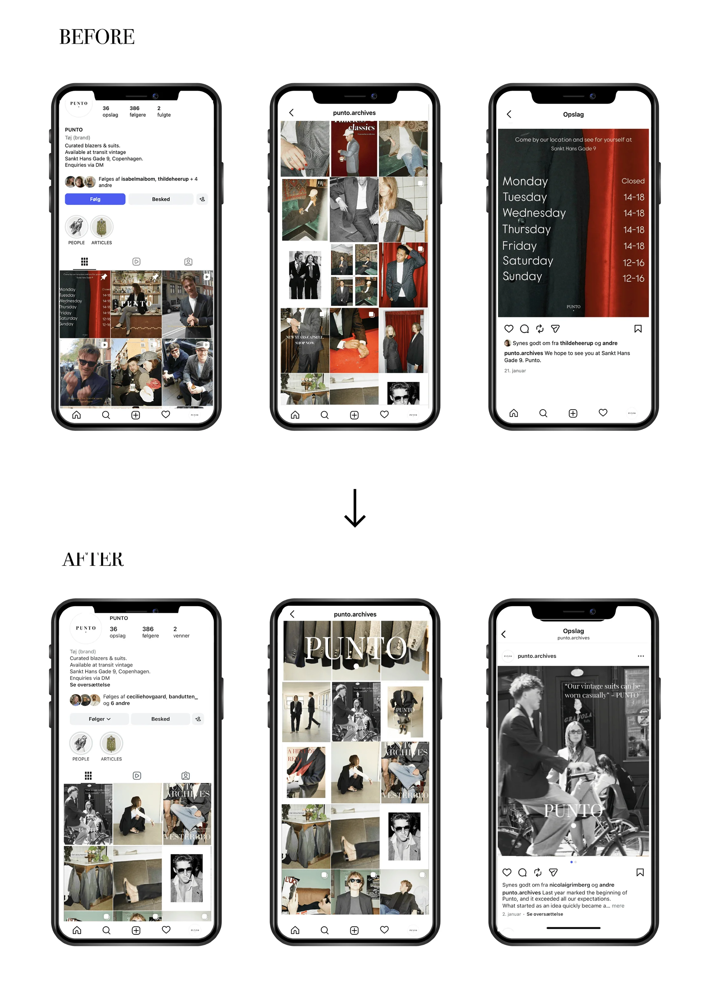
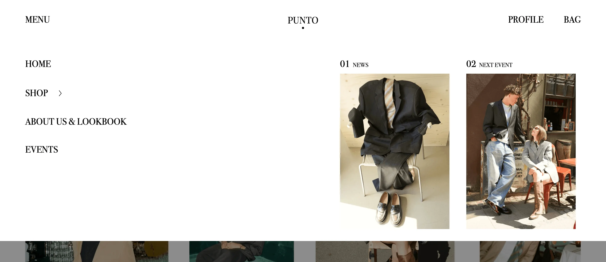
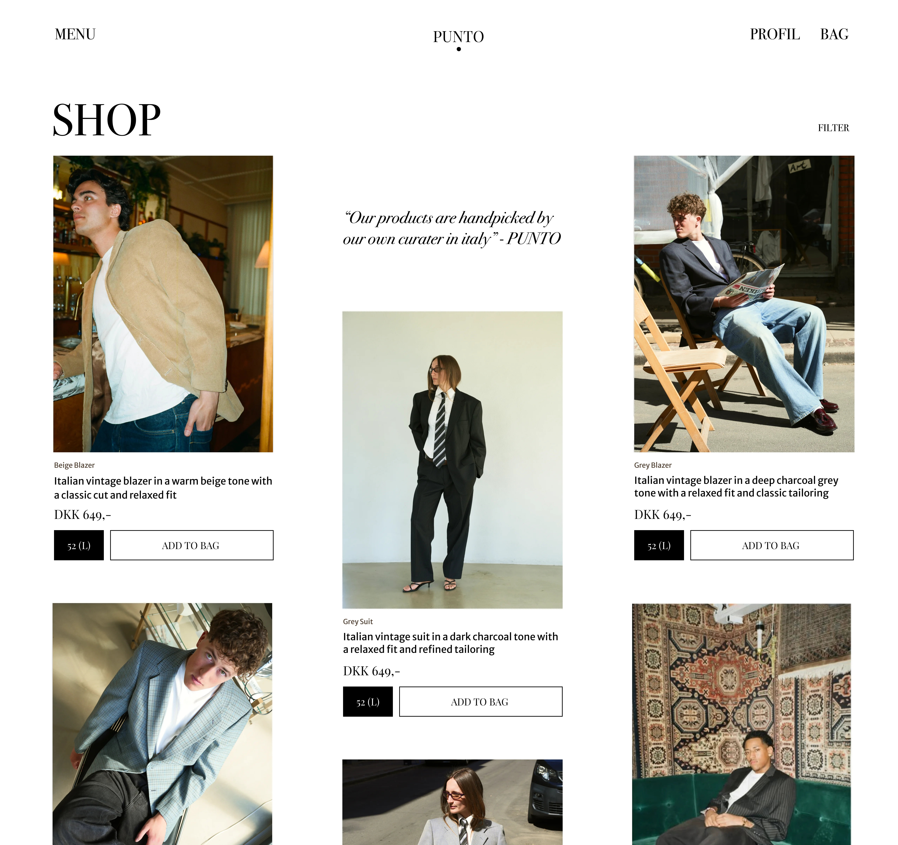
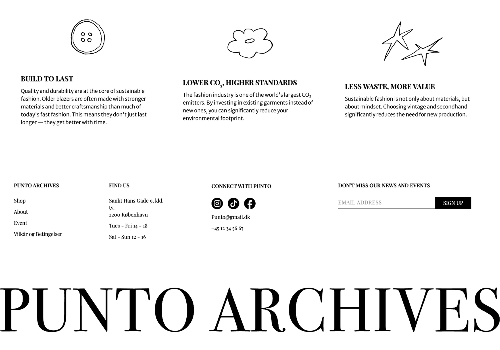
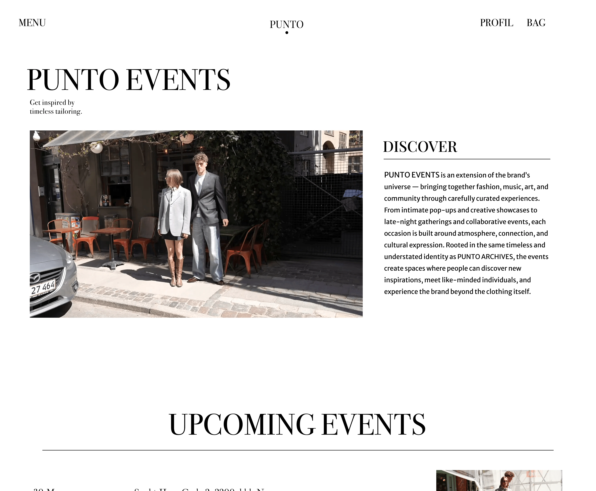
PHOTO SHOOT
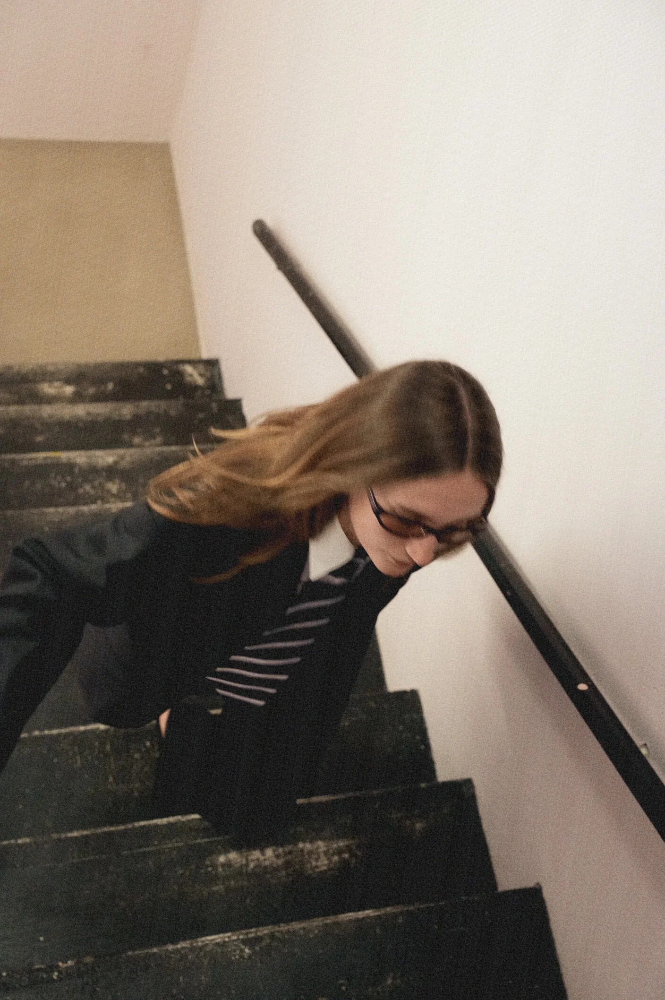
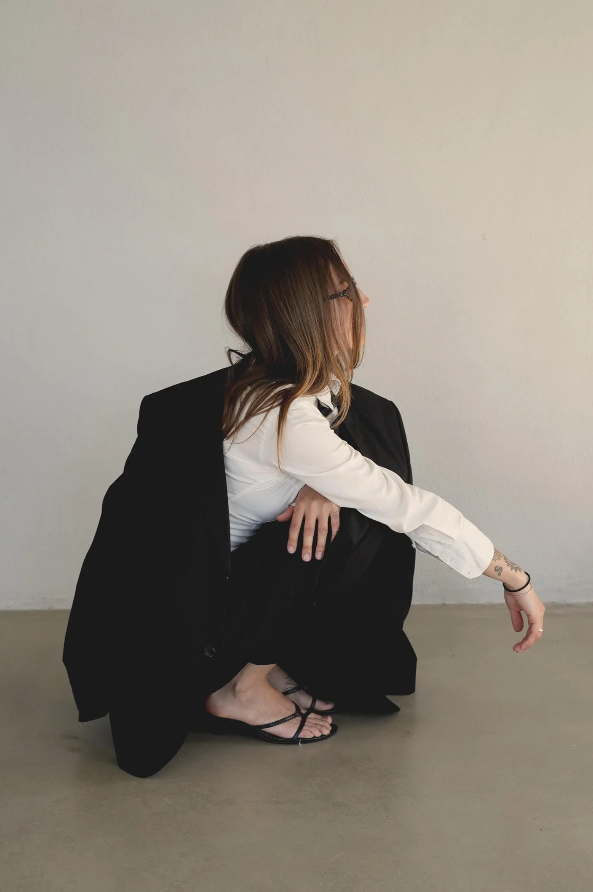
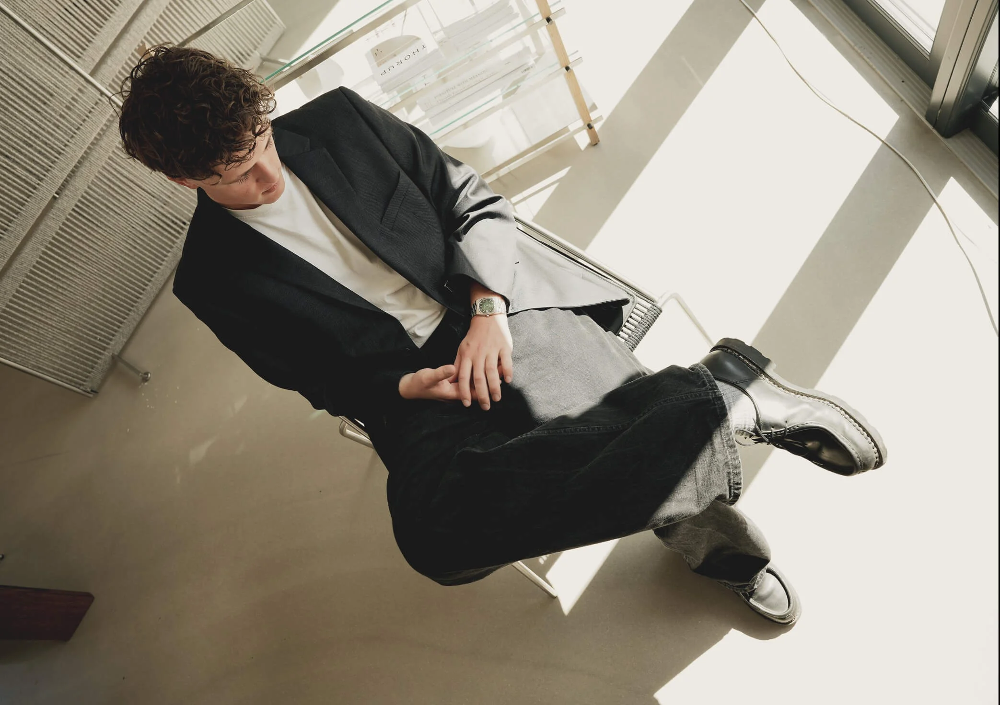
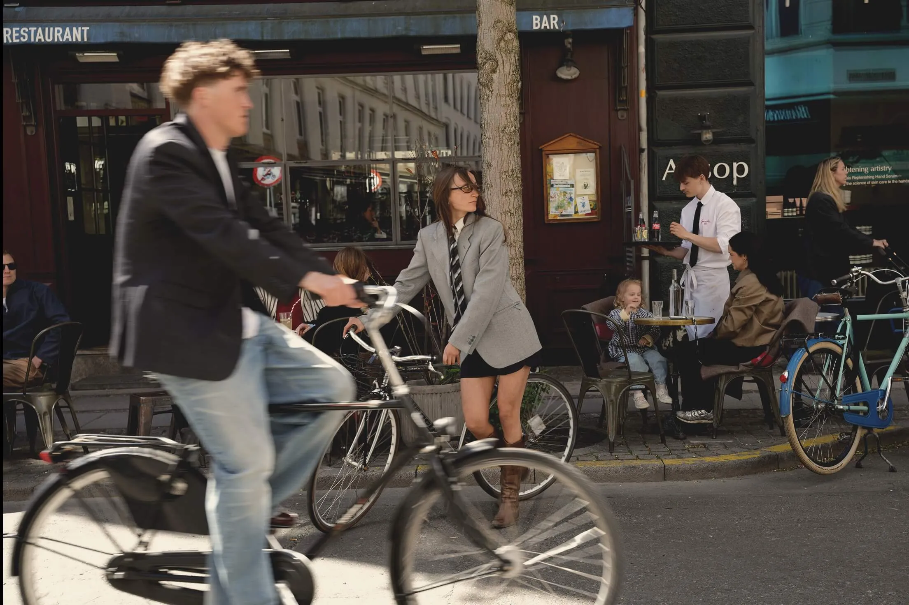
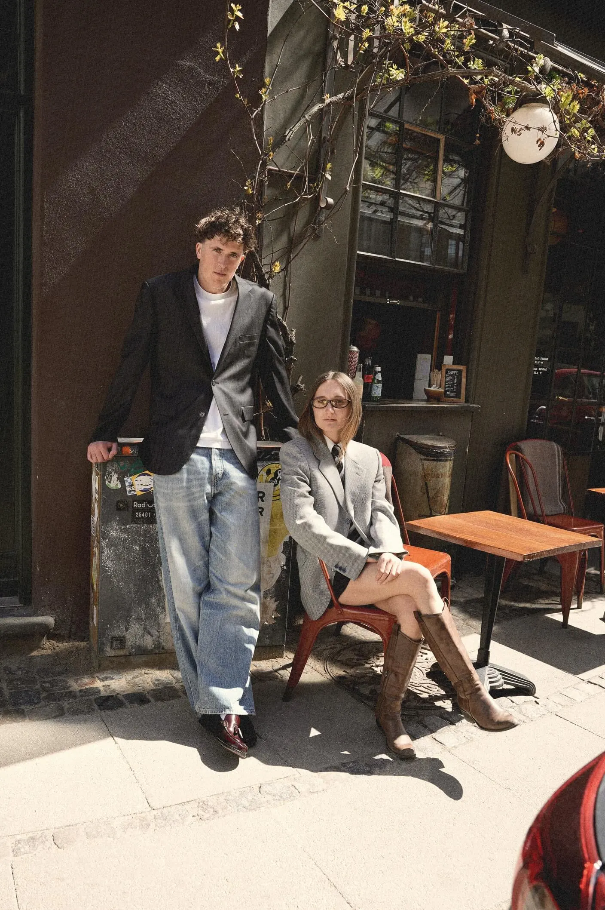
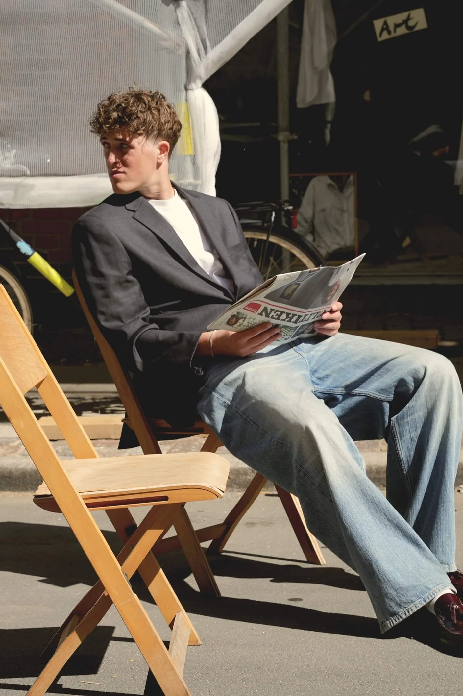
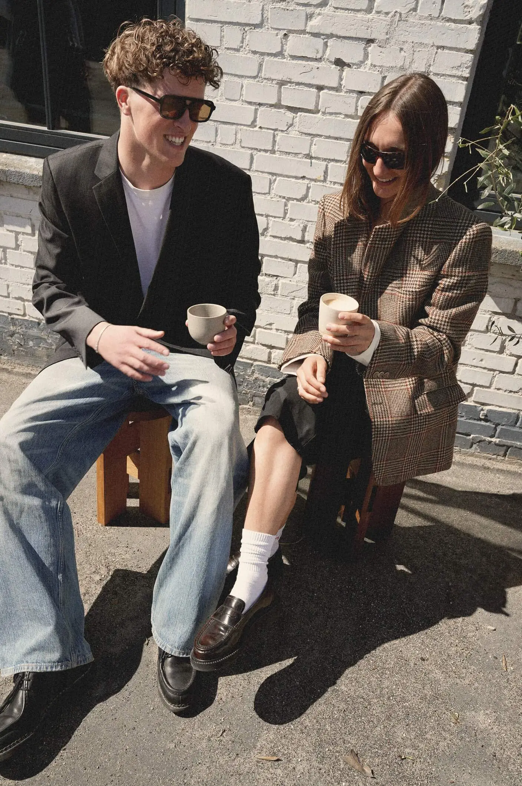